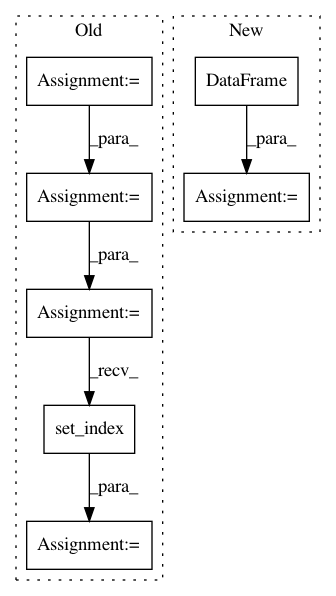

4a24e4e36ee175aef54b92eb03e08a2be7811a96,recordlinkage/datasets/febrl.py,,_febrl_links,#Any#,27
Before Change
def _febrl_links(df):
Get the links of a FEBRL dataset.
df_empty = df[[]].reset_index()
df_empty["key"] = df_empty["rec_id"].str. \
extract(r"rec-(\d+)", expand=True)[0]
// split the dataframe (org and dup)
org_bool = df_empty["rec_id"].str.endswith("org")
// merge the two frame and make MultiIndex.
pairs = df_empty[org_bool].merge(df_empty[~org_bool], on="key")
pairs_mi = pairs.set_index(["rec_id_x", "rec_id_y"]).index
pairs_mi.names = [None, None]
return pairs_mi
After Change
index_int = numpy.arange(len(df))
df_helper = pandas.DataFrame({
"key": keys,
"index": index_int
})
// merge the two frame and make MultiIndex.
pairs_df = df_helper.merge(
df_helper, on="key"
)[["index_x", "index_y"]]
pairs_df = pairs_df[pairs_df["index_x"] > pairs_df["index_y"]]
return pandas.MultiIndex(
levels=[df.index.values, df.index.values],
In pattern: SUPERPATTERN
Frequency: 3
Non-data size: 7
Instances
Project Name: J535D165/recordlinkage
Commit Name: 4a24e4e36ee175aef54b92eb03e08a2be7811a96
Time: 2018-03-10
Author: jonathandebruinhome@gmail.com
File Name: recordlinkage/datasets/febrl.py
Class Name:
Method Name: _febrl_links
Project Name: stellargraph/stellargraph
Commit Name: 3db0f69797d05b8090e4f1c72e9428991e3f2ff0
Time: 2020-03-04
Author: Huon.Wilson@data61.csiro.au
File Name: tests/mapper/test_directed_node_generator.py
Class Name:
Method Name: create_simple_graph
Project Name: catalyst-cooperative/pudl
Commit Name: 5aaa63d7ecf85d341fec9b758d17f2bf4cde6042
Time: 2020-03-11
Author: zane.selvans@catalyst.coop
File Name: src/pudl/transform/ferc1.py
Class Name: FERCPlantClassifier
Method Name: predict